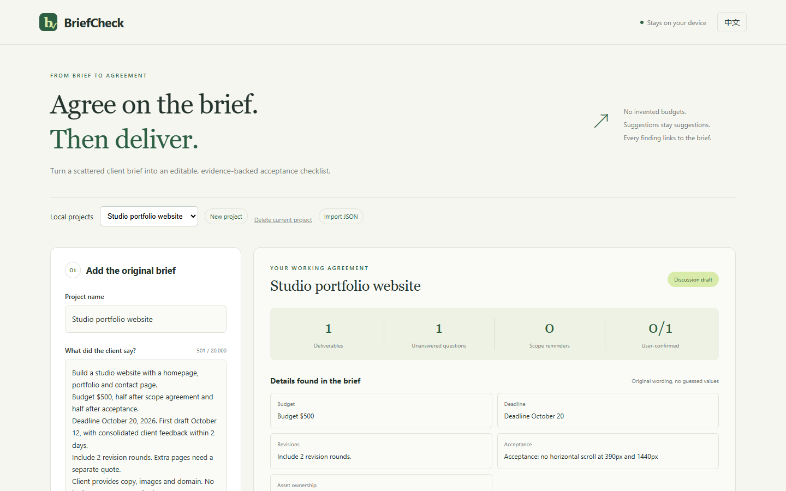

FUYOUPENG2007 / OCTOBER 2026
把想法做成工具。
让改进有据可查。
两款可以直接使用的作品，三代可复查的迭代，五份按比赛整理的参赛材料。
02独立成品
03迭代代次
05比赛候选包
0运行所需 API 密钥
01 / TRY THE WORK
先体验成品
样例使用虚构数据，工作内容保存在当前浏览器。
测试结果来自限定合成用例，不能换算成真实用户准确率。AccessProof 需要结合运行页面与人工测试使用。
02 / COMPARE, BUILD, VERIFY
三代变化，保留依据
V1
跑通核心流程
从输入、分析到导出，建立基线，记录固定用例里的失败。
V2
修正实际缺口
明确冲突与可选范围；完善名称解析、隐藏祖先与问题定位。
V3
让工作可以继续
导入导出、修改保留与失效、版本比较，以及独立客户预览。
03 / SUBMISSION PACKAGES
五场比赛，按条件选择
规则核查于 2026-10-02。年龄、学生身份和最终参赛资格由本人确认；尚未代表你投稿。
Build With AI: Basics
BriefCheck · 北京时间 10 月 27 日 05:00 · 法定成年
需本人确认参与与资格，并上传公开 YouTube/Vimeo 视频。LovHack Season 3
BriefCheck · 北京时间 10 月 5 日 11:45 · 13–24 岁学生
近期优先；主要构建需符合活动窗口，披露已有代码。WarriorHacks 2.0
AccessProof · 北京时间 10 月 14 日 12:45 · 高中或本科生
社区问题主题；需另填必需 Track Selection Form。HACK47: OFFGRID
BriefCheck · 页面时间：北京时间 10 月 15 日 12:00
时间正文及年龄/学生标签存在口径差异，投稿前复核。ML Empowerment 3.0
AccessProof · 保守时间：北京时间 10 月 6 日 12:00
条件候选：页面另写 10 月 10 日；AI 项目口径也需复核。READY TO READ
提交前，把条件核对清楚。
交付指南收录比赛条件、同类差距、测试依据与需要本人填写的事项。五份候选材料共用两款作品，跨比赛复用须遵守各场规则。